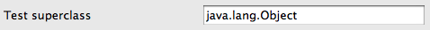
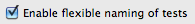
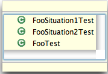
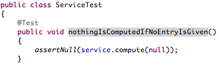

Available sections
Just click on the section of the documentation you are interested in:- Getting started
- Label decoration
- Marker in the editor
- Switching between test and class under test
- Test case/test method creation
- Running a test from class under test
- Missing test method view
- Refactoring support
- Preferences
- Project specific settings
- Extension point
Preferences
To use MoreUnit you can/should configure the preference page to fit your personal needs. All these settings can be configured for the whole workspace or for each project.- Directory for test cases: The folder containing your tests.

In the following screenshot tests are stored in the "junit" folder:

If you store your tests in a different project you will have to use the specific settings of your main project to reference the test project:

- Use test-prefix for test-methods: Whether test methods are prefixed
with "test". Automatically checked when using JUnit3:

- Method content: The default content of test
methods generated by MoreUnit:

- Test case suffixes/prefixes: Configure those prefixes and suffixes
to reflect your naming convention (by default, "Test" is defined
as a potential prefix and suffix):

- Package suffixes/prefixes: If you are using
prefixes or suffixes for your test packages.
For example: If tests for classes in the package com.foo.* are stored under com.foo.test.* you have to enter "test" into the package suffix property.

- You can configure a super class which is
used in the "New Test Case" wizard. If you use JUnit3
org.junit.TestCase will be automatically used as a super class,
whether you defined it here or not.
 - Enable flexible naming of tests: If you are
having several test cases for various
situations you should active this option:

Example:
Class: Foo.java
Tests: FooTest.java, FooSituation1Test.java, FooSituation2Test.java
Assuming you have chosen "Test" as a test case suffix and you have enabled flexible naming of tests, MoreUnit will find all test cases for Foo.java. When using the "Jump to Test" action, MoreUnit shows a lightweight pop-up menu to let you choose the test you want to jump to.
 - Enable extended search for test methods: If you
name your test methods with more meaningful names
than just the name of a method that is being tested,
you should activate this option:

In the following example, MoreUnit will find that nothingIsComputedIfNoEntryIsGiven() is a test method for Service.compute(): 